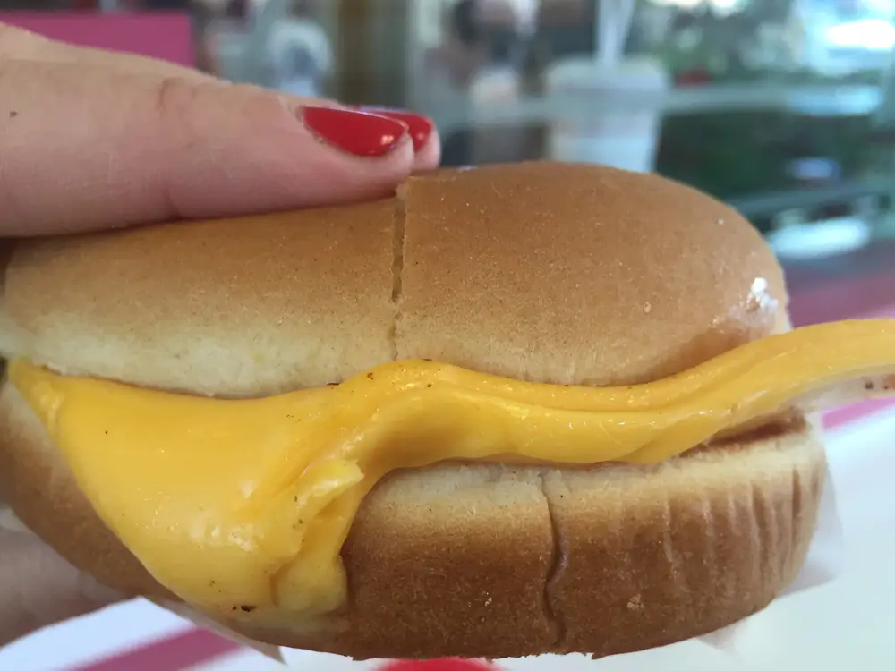
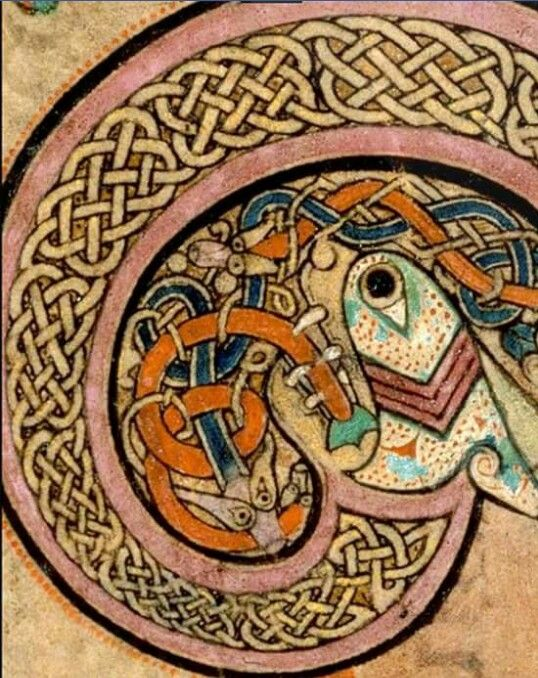

Grilled Cheese

Description
Bread. Cheese. Heat. Meat? No Meat*.
*Sometimes meat
Ingredients:
- Artisinally baked, small batch Wonderbread(tm) from your local Walgreens.
- Freshly churned, risen, and homogenized American cheese.
- Butter, of any national variety, though preferably Canadian.
Steps
- Find two of your finest slices of bread; lay them out parallel to eachother on a plate
- Give them a good talking to - let them know that they aren't all that, but soon they shall be
- Remove the shell from 4 slices of american cheese
- In culinary circles, this process is known as undressing the cheese
- Using the classically derived stitching techniques of ancient Celtic art, softly but intentionally entertwine your cheese slices with eachother

- Over an open flame, bring a skillet to medium heat, and melt your butter within
- Note: if an open flame is unavailable, an electric stovetop element will work in a pinch
- Bring bread to bread in a glorious union, making what is known as an "Grilled Cheese Tartare"
- Chuck that thang into your pan, and cook until golden brown on one side
- Don't mooooove it! Let it get nice and golden.

- Flip it over before it burns
- Remove from pan once cheese has melted, and slice diagonally
- Garnish with a puddle of warmed half n half, and freshly plucked stalks of wheat. Serve with a side of filet mignon, RARE